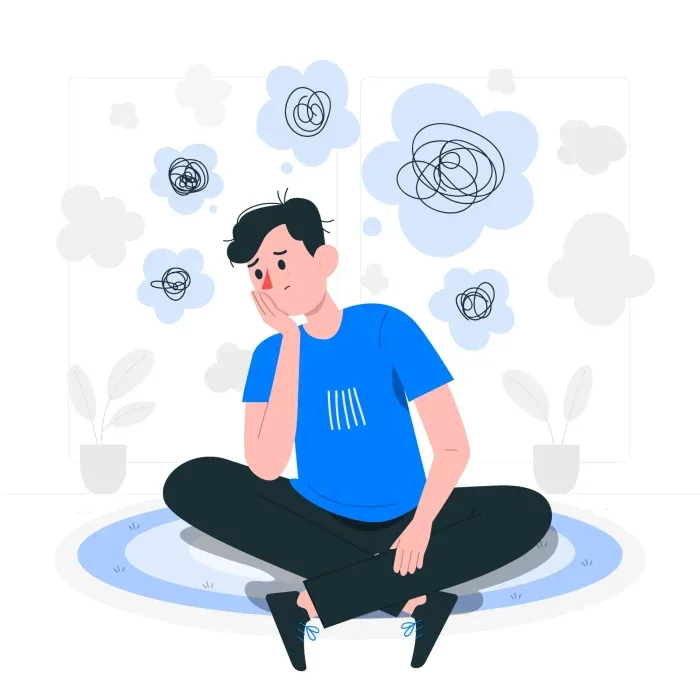

What are the best treatments for OCD?

If you have ever found yourself stuck in a loop of repetitive behaviors, OCD might have jumped over your mind at least once. The habit of saying ‘I’m quite OCD about this’ seldom leaves us, but it is true that in the realest sense, it is a problem that is disruptive in every sense.
When people suffering from OCD assess themselves and seek out the best treatments for themselves, they have one question- ‘Can our OCD be cured?’ They wish to live a life of normalcy seeking opportunities as anyone else should and such an hindrance is not welcome at most times.
The short answer is- OCD is manageable. With the right interventions, it can provide you with the best life possible. So if a ‘cure’ is not present in a traditional sense, an effective long term solution is definitely possible.
Therapeutic Treatments
Holy grail of treatments in OCD, Cognitive Behavioral Therapy (CBT) and Exposure and Response Prevention (ERP) work wonders. ERP gradually exposes the client to situations causing distress in a controlled way. Over time, the fear is molded to normalcy since the mind is exposed to the fact that the worst outcome does not occur. ERP has a high success rate in reducing symptoms and improving overall quality of life.
Medicinal Management
In some cases, only adding therapeutic interventions might not work. According to Dr. Gorav Gupta, a renowned psychiatrist in Gurgaon, medication can also be a great way to assist treatment in severe cases. Usually prescribed doses of Selective Serotonin Reuptake Inhibitors (SSRIs) are given to clients in cases where therapy is not providing full efficacy. For many, the combination of medication + ERP works as a perfect management plan. (JAMA Psychiatry)
Thoughts and compulsions like these can hit anyone at any time, and it is nothing to be ashamed about. It is a topic of discussion, care and providing what is needed the most- support. Consulting a psychiatrist in Gurgaon can be a step of sheer understanding and comfort for a person suffering from daily tribulations of OCD. A trained professional can help you achieve the right lifestyle & goals in the long run.
If you’re feeling overwhelmed or stuck in repetitive cycles, know this: help exists, and it’s effective. Connect with our experts today and receive care that works in your interest and faith.
Take the first step towards your own well being.